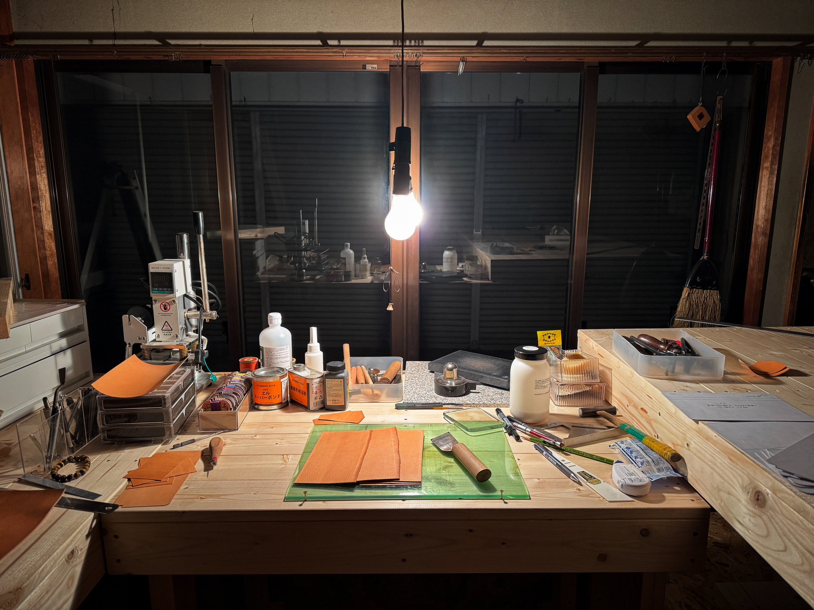
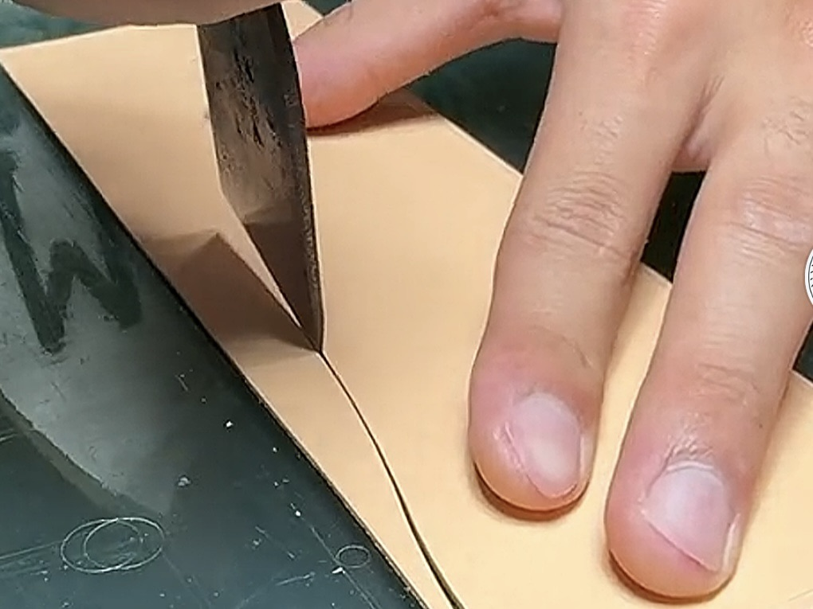
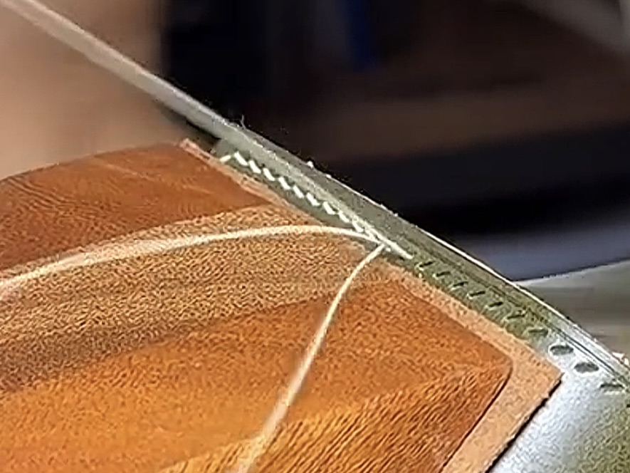
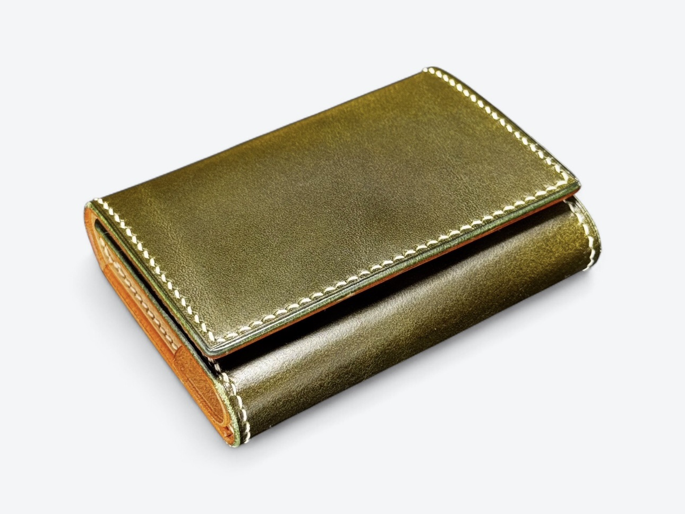

Brand
ブランドについて
前田工芸は、山梨県富士吉田市にある革製品の工房です。
革に触れ、手を動かすことが好きで、この仕事を続けています。 人が訪れ、少し賑やかになるこの場所もまた、ものづくりの一部だと思っています。
Craft
ものづくりへの想い
12歳の頃、経年変化していくヌメ革に惹かれたことが、ものづくりの始まりでした。 革の香りや手を動かす感覚が心地よく、気が付けば時間を忘れて没頭していました。
今でもその感覚は変わらず、むしろ革について知るほどに、より深く引き込まれています。 ひとつの工程に集中していると、数時間があっという間に過ぎてしまうことも少なくありません。
革製品は、使う人の時間の中で少しずつ姿を変えていきます。 ポケットに入れれば丸くなり、仕事によって傷がつき、日々の使い方によって表情が生まれます。
その変化は、単なる劣化ではなく、その人の生活が刻まれたものだと思っています。 傷や色の変化も含めて、その人だけのものになっていく過程が、革製品の魅力です。
新品の状態が完成ではなく、使われることで初めて完成に近づいていく。 そうした時間の流れを楽しめるものを、つくり続けたいと考えています。
Material & Technique
素材と技へのこだわり
Leather
主に使用しているのは、イタリアンレザーです。 油分を多く含み、しなやかで繊細な質感を持つ革が多く、自分の作品との相性がよいと感じています。
アメリカンレザーの無骨さや、日本の革の軽やかさもそれぞれ魅力がありますが、 手に取った時の質感や香り、時間とともに変化していく表情を含めて、イタリアンレザーには特に信頼を置いています。
Stitching
縫製はすべて手縫いで行っています。 見た目の美しさだけでなく、力加減を調整しながら革に負担をかけずに縫うことができる点も理由の一つです。
一針ずつ進めていくことで生まれるリズムや、完成に近づいていく過程そのものも、この仕事の大切な要素だと感じています。 一見するとミシンのように見える縫製も、手縫いだと伝えた時に驚かれる瞬間が好きです。
Workshop
作業風景




実際に手に取り、使いながら感じてもらえたら嬉しいです。
お近くにお越しの際は、ぜひお立ち寄りください。